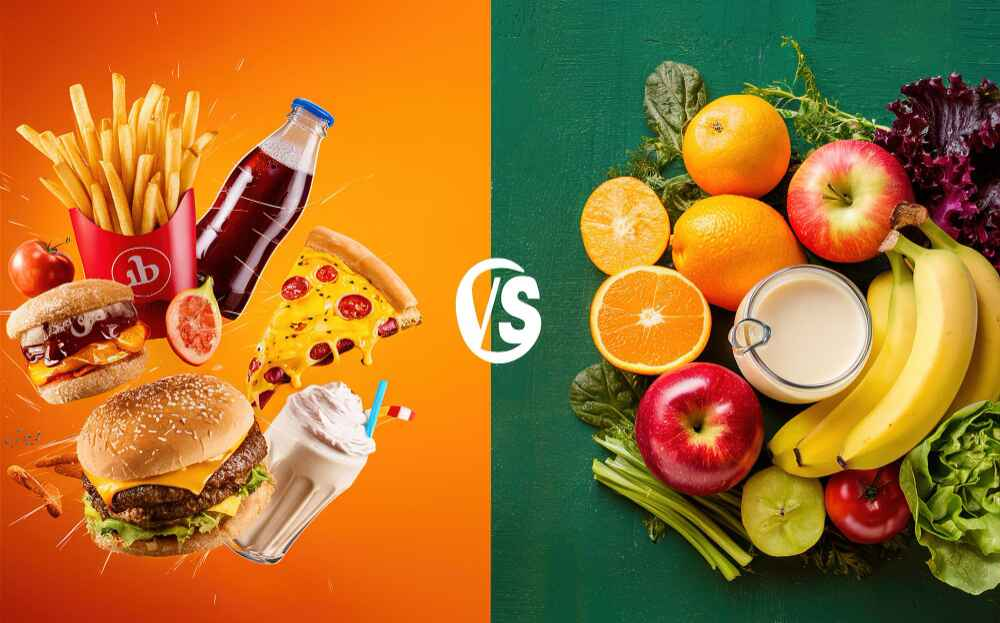

Nutrition & Diet: Powering a Healthier Life.
Sections
IntroductionEssential Nutrients and Their Role in the Body
Building Healthy Eating Habits
Nutritional Needs Across Different Life Stages
Conclusion
References
Introduction
Nutrition is an integral part of a healthy life. The food that we eat every day has a direct impact on our energy, mental health, immune system and long-term health. A well-balanced diet must include fruits, vegetables, whole grains, lean proteins, and healthy fats, which can ensure proper functioning of the body. As the Centers of Disease Control and Prevention (CDC) demonstrates, an appropriate diet not only boosts the effectiveness of the immune system but also helps decrease the risk of chronic illnesses (CDC, 2025). Wellness nutrition is not only associated with appearing healthy to the world but also enhances life quality. Thus, better food choices are important in the direction of longer and healthier living.
Essential Nutrients and Their Role in the Body

Each nutrient in the food has a particular activity in the body. Carbohydrates in particular are the primary source of energy in our body, and that is provided by whole grains, fruits and vegetables. The World Health Organisation proves that carbohydrates constitute about 45-75% of the total daily energy intake, and the best sources of carbohydrates are whole grains, pulses, and fresh produce (WHO, 2025). Moreover, proteins assist in muscle repair, as well as in supporting the immune system. Proteins include those in eggs, lean meat, beans and lentils. Furthermore, healthy fats and minerals of fruits and vegetables that allow various processes in the body. To minimise non-communicable diseases, WHO recommends that individuals consume at least 400 grams, or five portions, of vegetables and fruits each day (WHO, 2023).
Building Healthy Eating Habits

Eating healthy does not mean that you are on a diet, but it is simply making wiser choices in our daily lives. Regulation of food size and intake will help reduce obesity and diabetes that are widespread issues today. The Dietary Guidelines for Americans 2025-2030 advise individuals to cut down junk foods, and other highly processed foods that contain high levels of sugar, excessive sodium and refined carbohydrates. Not just that, they also encourage individuals to base their meals on whole and nutrient-rich foods ( Dietary Guidelines, 2025). Other than that, consuming an adequate amount of water on a daily basis helps in digestion, the flow of blood, and general energy. So small changes can make a big difference over time.
Nutritional Needs Across Different Life Stages
During our growth, nutrition plays a significant role, and Nutritional need varies with our growth. In particular, children require high-nutrition foods to ensure physical and mental growth. In the first six months WHO advises exclusive breastfeeding and then nutrient-dense foods from six months onwards (WHO, 2025). In addition, elderly people require additional calcium, vitamin D and protein in order to retain healthy bones and muscles. Athletes and other physically active people require more carbohydrates and protein ratio to boost and energise their performance and quick recovery. These are significant differences that can guide people to make informed food decisions that can help their health at all levels.
Conclusion
Nutrition is not a luxury, but it is a necessity. Any person can become healthier by consuming various whole foods, keeping his or her hydration, and remembering the portion size. The CDC states that healthy eating habits have improved the longevity of the population and reduced the risk of developing severe diseases like heart disease, type 2 diabetes, and obesity (CDC, 2025). Whether you are a child, an adult, or an older person, the food on your plate today is building the health of your tomorrow. Start with small, consistent changes and let the good nutrition become a lifelong habit.
References
1. World Health Organization. (2025). Healthy Diet - Fact Sheet.
https://www.who.int/news-room/fact-sheets/detail/healthy-diet
2. World Health Organization. (2023). Healthy Diet Fact Sheet No. 394.
https://cdn.who.int/media/docs/default-source/healthy-diet/healthy-diet-fact-sheet-394.pdf
3. Centers for Disease Control and Prevention. (2025). Healthy Eating Tips.
https://www.cdc.gov/nutrition/features/healthy-eating-tips.html
4. Centers for Disease Control and Prevention. (2025). Tips for Healthy Eating for a Healthy Weight.
https://www.cdc.gov/healthy-weight-growth/healthy-eating/index.html
5. U.S. Department of Health and Human Services. (2025). Dietary Guidelines for Americans 2025–2030.
https://cdn.realfood.gov/DGA.pdf